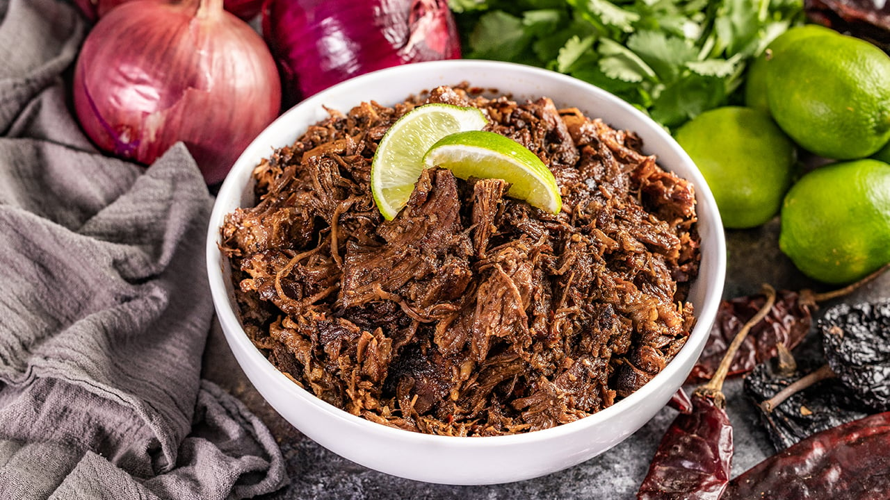

BARBACOA RECIPE

Ingredients:
- Beef chuck roast or brisket: 4 pounds, cut into large chunks
- Chipotle peppers in adobo sauce: 2-3 peppers, minced
- Garlic cloves: 4, minced
- Cumin powder: 1 tablespoon
- Dried oregano: 1 tablespoon
- Apple cider vinegar: 1/4 cup
- Beef broth or water: 1 cup
- Bay leaves: 2
- Salt and pepper to taste
- Chopped fresh cilantro and lime wedges for garnish
Method:
- Preheat your oven to 275°F (135°C).
- In a blender or food processor, combine the minced chipotle peppers, minced garlic, cumin powder, dried oregano, apple cider vinegar, and a pinch of salt. Blend until it forms a paste.
- Place the beef chunks in a large oven-safe pot or Dutch oven. Season the beef with salt and pepper.
- Spread the paste mixture over the beef, ensuring it coats all sides of the meat.
- Pour beef broth or water into the pot and add bay leaves.
- Cover the pot with a lid and place it in the preheated oven.
- Braise the beef in the oven for 4-5 hours until the meat is tender and easily shreds with a fork.
- Once cooked, remove the pot from the oven and shred the beef using two forks.
- Discard the bay leaves and serve the barbacoa hot, garnished with chopped fresh cilantro and lime wedges.
- Barbacoa is commonly served in tacos, burritos, or as a main dish with rice and beans.
Barbacoa is Ready to Enjoy!!!